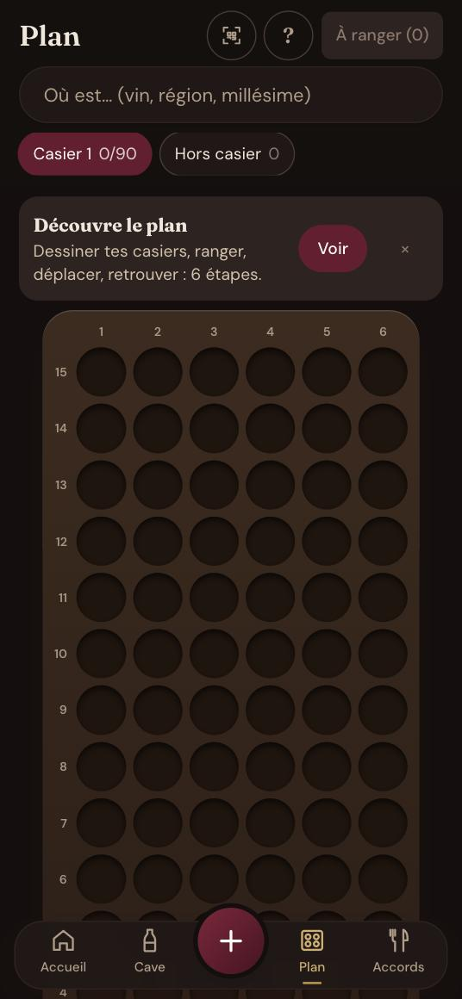
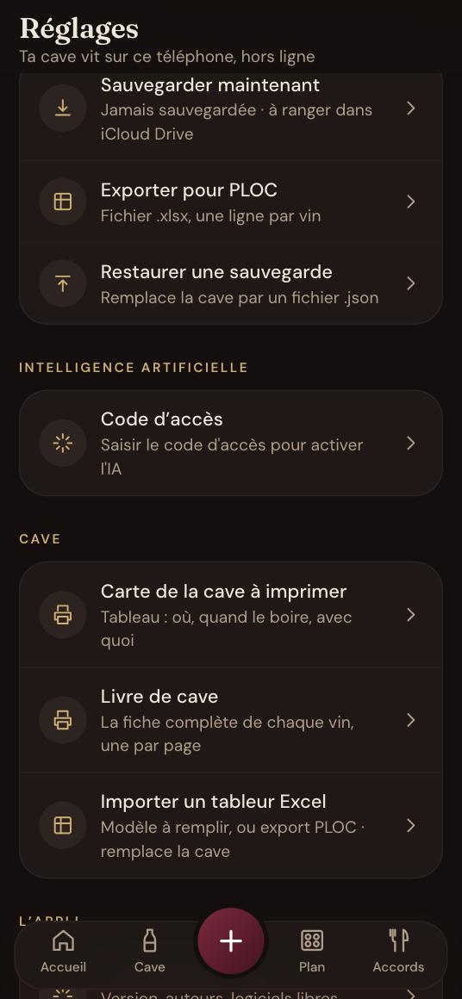

L’intelligence artificielle au service de la cave
Moins de saisie, plus de dégustation
L’IA lit les étiquettes
Une photo suffit : domaine, cuvée, millésime, couleur. Plusieurs bouteilles ? Envoyez un lot de photos d’un coup.
L’apogée de chaque vin
L’app vous dit quand ouvrir chaque bouteille : ni trop tôt, ni trop tard.
Le sommelier
Dites ce que vous mangez, il choisit dans votre propre cave le vin qui l’accompagnera.
Phase bêta. L’app est gratuite. Pour l’instant, les fonctions d’IA s’activent avec un code d’invitation, ou avec votre propre clé d’IA. Demander un code d’invitation
Dans l’app
De l’achat jusqu’au verre
« Dis-moi ce que tu manges, je te dirai quoi déboucher »
Poulet au citron, huîtres, raclette, plateau de fromages… Le sommelier connaît le contenu de votre cave et propose les bouteilles qui iront bien avec votre plat.
Ajouter une bouteille en une photo
L’IA remplit la fiche, vous n’avez plus qu’à vérifier. La saisie à la main reste possible à tout moment.
- Photo de l’étiquette ou lot de photos
- Nom, producteur, millésime, cuvée, couleur
- Import depuis un tableur Excel ou PLOC
Le plan de vos casiers
Dessinez vos casiers, armoires ou étagères, puis rangez chaque bouteille à sa place. Une recherche suffit ensuite pour savoir où elle se trouve.

Le papier, quand on en a besoin
Tout s’imprime pour garder une trace ou étiqueter la cave.
- Le livre de cave : la fiche complète de chaque vin, une par page
- La carte de la cave : où, quand le boire, avec quoi
- Des étiquettes de col, à scanner pour retrouver la fiche
- Sauvegarde hors ligne et synchronisation entre téléphones

À la vôtre !
Ouvrez l’app, ajoutez vos premières bouteilles, puis installez-la sur l’écran d’accueil de votre téléphone.
Ouvrir Cave à vin